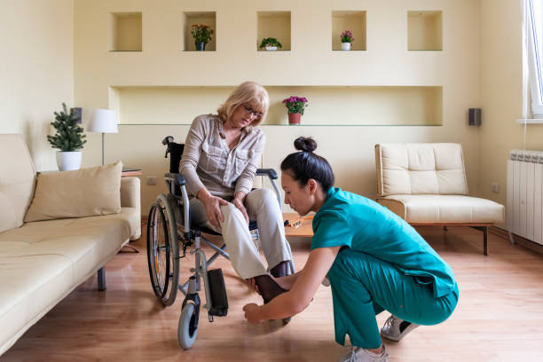

Nuestros Servicios
Brindamos un Servicio de enfermería que se adapta a cada necesidad y que integra a: Licenciados en enfermeria, enfermeros profesionales, cuidadores y acompañantes terapeuticos.
Brindamos un Servicio de enfermería que se adapta a cada necesidad y que integra a: Licenciados en enfermeria, enfermeros profesionales, cuidadores y acompañantes terapeuticos.
Nuestros Coordinadores de Enfermería administran un plantel de Enfermeros profesionales y Auxiliares, y son los responsables de planificar y controlar todos los cuidados de enfermería que logren satisfacer las necesidades de nuestros Pacientes en el hogar.
Nuestros servicios incluyen:
| Cuidado personal | Actividades Integrales |
| Higiene y Confort | Rehabilitacion |
| Administracion de medicacion | Salidas programadas |
| Control de signos vitales | Acompañamiento a visitas medicas |
| Alimentacion enteral y parenteral | Compras domesticas y farmaceuticas |
| Ejercicios recreativos | Solicitud de turnos medicos |
¿Con cuanto tiempo de anticipacion debo contratarlos?
Recomendamos contratarnos 48 horas antes, es tiempo mínimo que necesitamos para seleccionar el acompañante de salud con el mejor perfil adaptado a su situación. En el caso de requerir nuestro servicio en carácter de urgencia podrá contratarlo, ya que tenemos nuestro equipo estable con suplentes de guardia las 24 horas.
¿Cuando recibo la informacion del personal selecionado para el seviccio?
Previo al día de la presentación, le enviaremos por correo la documentación de las asistentes asignadas y contratadas por nosotros, sus legajos completos con sus datos personales, foto actualizada, fotocopia del dni, titulo de formación, Libreta sanitaria, antecedentes penales, certificado de domicilio, seguro de accidentes, fotocopia del carnet de Obra Social y la constancia de aportes.
¿Trabajan con obras sociales o prepagas?
No de forma directa, pero le proveemos toda la documentación pertinente y así podrá efectuar el reintegro según su obra social o prepaga.
¿Cuanto personal envian si contrato el servcio de 24 horas los 30 dias del mes y cuales son las formas de pago?
Son dos personas estables, que realizan guardias de 24 horas activas y pasivas, rotando día por medio. Contamos con módulos especiales si la persona a cuidar necesita vigilia permanente. En el momento de llevarse a cabo la contratación se deberá abonar el importe en efectivo o por transferencia bancaria, antes de recibir el servicio mensua
¿Cuales son las diferencias entre una cuidadora, un acompañante terapeutico y un auxiliar de enfermeria?
Cuidadora domiciliaria: Su formación esta vinculada para solucionar las necesidades especificas relacionadas con las actividades de la vida diaria. Cuidan a personas dependientes o independientes con enfermedades leves o moderadas.
Auxiliar de enfermería: Proporcionan cuidados supervisados por enfermera profesional sus practicas dentro de sanatorios y geriátricos lo facultan para accionar en pacientes que cursen enfermedades graves o tratamientos crónicos.
Acompañante terapéutico: Es aquel que actúa como auxiliar de salud, abordando diferentes estrategias y cuidados con aquellas personas que está bajo tratamiento médico psiquiátrico y enfermedades neurológicas
NO DUDE EN CONSULTAR A nuestros teléfonos o déjenos un mensaje en la web y nos contactaremos
RECIBI UN PRESUPUESTO PERSONALIZADO
COTIZAR AHORATel: +54 11 6974 7029 / 4384 5677 / 5258 6399 / 4383 3835